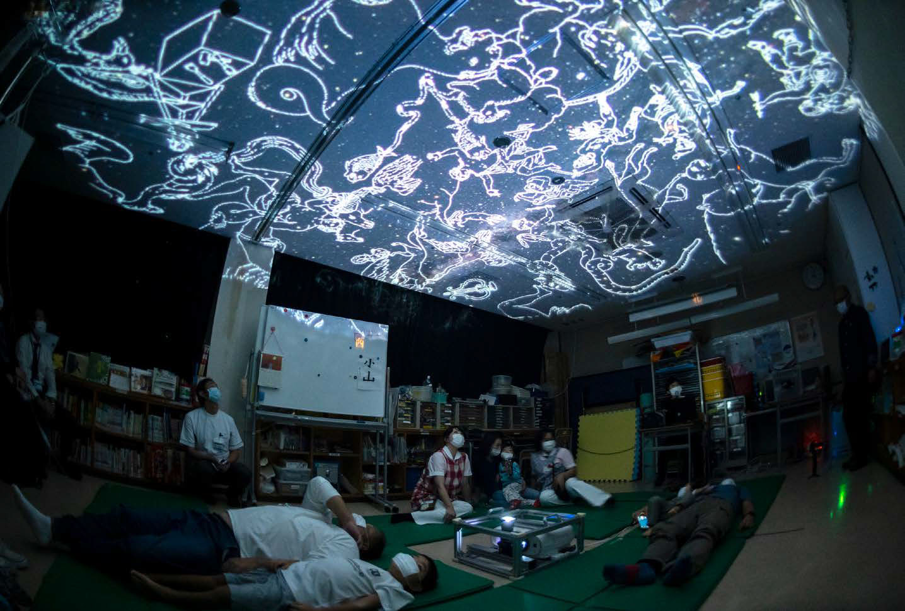

Today's Topic
Creative for Cure
"Creative for Cure"とは2018年6月1日に横浜市立大学が設立した、世界初の健康・医療分野のコミュニケーション・デザインセンターです。人々の健康意識の向上のためのプロダクト、医師と患者のコミュニケーション、こういった分野に特化して魅力的なクリエイティブを生み出している珍しいラボです。
ホスピタルアートとかそういったものを調べている時にこのCreative for Cureを知りました。ここのデザインラボでも、ホスピタルアートのような空間的アプローチもしているようです。上の画像は小児科の院内でプラネタリウムを行なった様子です。その時には、ある子どもが生まれた日に時間を戻して、その時の夜空を映し出すという演出をしたらしいんです。子どもたちにとって、記憶に残る体験になっていそうですよね。
様々な取り組みをされているようですが、気になったものをもう一点紹介します。
ちょっとシリアスな雰囲気の画像ですよね。これは、1年前に神奈川県で出されたシネアドの映像を一部切り取ったものです。(アマナデジタルさんが映像制作手伝っていたようですね。)何のための広告かというと、"未病"を人々に普及させるための広告です。
未病、というのは、「病気ではないから健康であるというような二分論ではなく、人は病気と健康との間を絶えず行き来しているとし、病気でも健康でもない状態のこと」を指すそうです。映像の中では、未病が悪化する、つまり、健康に見えるんだけれど体内では病気の状態に著しく近づいている状態、になるとその体内部分が透けて見える症状が表れるというストーリーが描かれています。(画像参照です。)現代人は生活習慣の乱れによって未病が悪化することが多い、だから生活習慣を正すことが大切なのだと啓発しているのですね。
映像・プロダクト・空間、様々なクリエイティブアプローチで医療課題を解決しているラボのご紹介でした。気になる方はLINKからポートフォリオを見てみてくださいね。